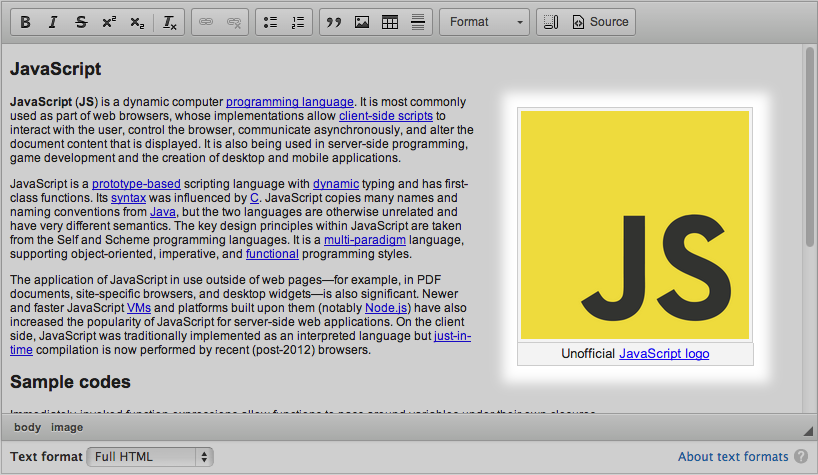
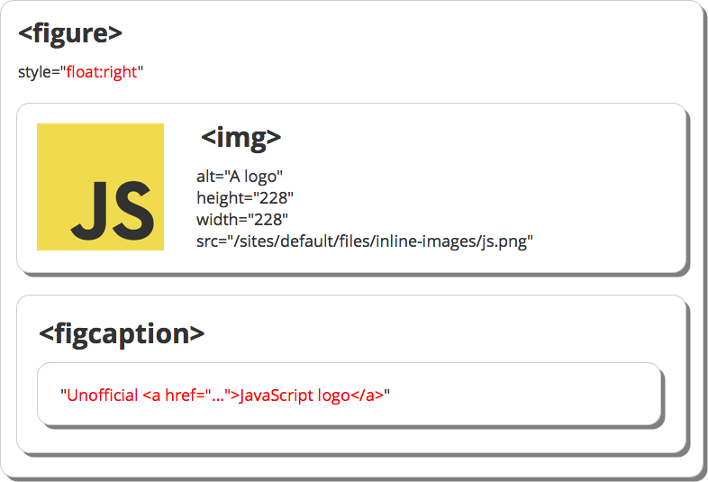
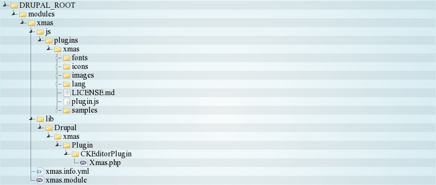
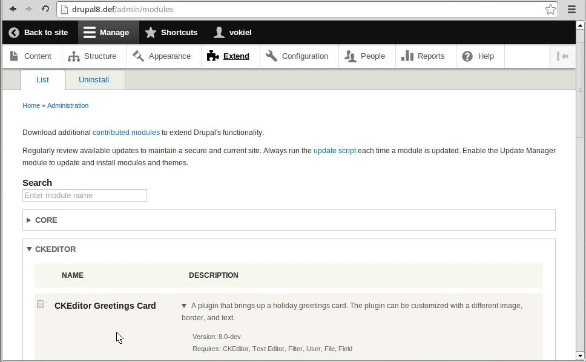

CKEditor in Drupal 8
- Wiktor Walc @w_walc
- Robert Mikolajuk @vokiel
- Aleksander Nowodzinski @anowodzinski
Follow CKEditor on Twitter: @ckeditor
Agenda
- Why existing WYSIWYG solutions for Drupal 6/7 are bad
- New features offered by CKEditor & Text Editor modules
- What is ACF and how it works
- Widgets: why use them and how they handle images
- Writing and adding plugins to CKEditor
- Security: HTML Filter vs. ACF
- Migration
Drupal 6/7
- Contributed modules: WYSIWYG or CKEditor
- Troublesome installation in both cases
- Poor UX
- Popular WTFs:
- Images are lost after saving node (CKEditor Toolbar vs. Text format configuration mismatch)
- Confusion: installed CKEditor module but need to download CKEditor (the editor)? o.O
- Which module to install?
Drupal 8
- Select text editor straight in "Text formats and editors" administration page
- Drag & drop toolbar configurator for CKEditor
- HTML filter settings automatically updated
- Nice API for registering additional CKEditor plugins, enhancing CKEditor configuration form
Demo #1
How CKEditor toolbar configuration triggers an automatic update of Allowed HTML tags list
Video #1
Basic HTML text format is configured:
- CKEditor button (Table) is added to the toolbar using D&D
- Allowed HTML tags list is automatically updated with <table>, <tr>, <th>, <td> tags
- Another button (Underline) is added using D&D to the toolbar
- <u> is automatically added to Allowed HTML tags list
- The Underline button is removed from toolbar
- <u> is automatically removed from Allowed HTML tags list
- The Styles dropdown is added using D&D
- A configuration tab for the Styles plugin is immediately shown
- After defining styles for <h2> and <h3>, the entered configuration is immediately picked up and the list of allowed HTML tags is again extended
Demo #2
How automatic update of Allowed HTML tags list works when buttons (features) are removed
Video #2
Basic HTML text format is configured again:
- Strike button is added to the toolbar
- <s> is automatically added to Allowed HTML tags list
- The form with text format configuration is saved
- An article with striked text (<s> tag) is created
- Basic HTML text format is configured again
- Strike button is removed from CKEditor toolbar
- This time <s> tag is not removed automatically, because it could have been used in existing content
- An article is edited again in CKEditor
- Altough Strike button is no longer available in CKEditor toolbar, <s> tag is not removed
ACF (Advanced Content Filter)
- Everything that is not allowed is removed
- Works also when pasting content – WYSIWYG!
No need to submit form and wait for the server-side filter to remove disallowed tags to see the final markup
- Smart (transformations - stripping tags, not content)
Switching text formats? Remember about ACF

Demo #3
Live example of how ACF works on different text formats
Video #3
Results of pasting content in different text formats:
- CKEditor is enabled on Restricted HTML format
- An article is created with Restricted HTML text format
- In CKEditor source mode <script> and <footer> are pasted
- After switching to WYSIWYG mode, both disallowed tags are gone but content of a footer is kept
- Part of an HTML page with headers and a table is copied and pasted in Google Chrome; both tags are disallowed in this format
- ACF removed disallowed tags, but again the content from headers and table cells is preserved
- The format of article is changed to Basic HTML
- The same content is pasted again; this time tables and headers are not removed, because we allow it in this format
- Font colors are disallowed, however, so inline styles are removed by CKEditor
Results of pasting content in different text formats (continued)
- The format of article is changed to Full HTML
- The same content is pasted again; this time nothing is removed because ACF is disabled here
- The same portion of the HTML page is copied & pasted in Firefox
- Even though ACF is disabled, the font color isn't copied. Why? Because browsers are different: Firefox copies just the HMTL structure, while Chrome copies HTML and "the layout". Need consistency? Use ACF.
Editing possibilities
- Classic editor
- Inline editor
Administration backend
"Classic" editor
- <iframe> – based
- CSS-styles are not inherited from admin theme
- Themes may register dedicated stylesheet for CKEditor through an entry in their .info file:
ckeditor_stylesheets[] = css/ckeditor-iframe.css
Classic editor in action, note the CSS styles in WYSIWYG area:

Quick editing
"Inline" editor
- No <iframe>!
- CSS-styles are inherited; the content looks exactly the same both in editor and on website.
- Real WYSIWYG, finally!
Handy quick edit option in Drupal 8:

Editing node using quick edit feature:

Note that CSS styles did not change!
Styling content
- CSS style definitions set in themes CSS files
- Selected style definitions (using CSS classes) available in Styles dropdown list
- Separate: semantic markup and visual presentation
- Handy: consistent styling, less work overall
Inline styles?
How do I enable Text/Background Color buttons in Drupal 8?
- CKEditor in Drupal Core != CKEditor "Full" preset
- But... additional plugins might be added!

Enabled Color buttons in Full HTML text format:

Widgets
Widgets are rich-content units.
Why Widgets?
Developers need
- Structured data in WYSIWYG
- Separation of layers
- Fancy UI
but still...
- Something easy to create
- Customizable
- Bulletproof
- Perfect UX
About widgets
- CKEditor 4.3+
- CKEditor Widget Plugin
- Editable parts (separate Allowed Content rules)
- Common dialog
- Common context menu
- Select and delete as a whole
- Same look and feel for all instances
- Drag and drop as a whole
- Widget styles
- Cross-browser
Widget in WYSIWYG
Widget in DOM
It is fragmented!
Widget in database

It is structured!
It's simple!
editor.widgets.add( 'demoWidget', {
// Permit specific tags, attributes, classes, styles in the editor.
allowedContent: '...',
// This is how the widget looks in the editor.
template: '... ',
upcast: function( element ) {
if ( Element is right ) {
// ...then convert it into WYSIWYG widget...
return element;
}
},
downcast: function( element ) {
// Convert widget back into DATA...
return element;
}
} );
More in the official guide
New Image Plugin
- Widget!
- Captions
- Dynamic resizer
- Drag and drop
- Copy and paste
- Integrated w/ dialogs
Let's see it in action...
Video #4
New Image Plugin in Drupal
New vs. old
- Widget implementation is bulletproof
- Widgets are immutable (Advanced Content Filter)
- Safe interaction with surroundings (drag and drop)
- Integrated with Drupal
- Simpler
Writing plugins
- Adding new plugins (e.g., from addons repo)
- Extending the list of configuration options
Adding new plugins
-
CKEditor Addons repository:
http://ckeditor.com/addons/plugins/all -
Sample Greetings Card plugin:
http://ckeditor.com/addon/xmas
Directory structure
YAML
DRUPAL_ROOT/modules/xmas/xmas.info.yml
name: CKEditor Greetings Card
type: module
description: >
A plugin that brings up a holiday greetings card.
The plugin can be customized with a different image, border, and text.
core: 8.x
package: CKEditor
version: VERSION
dependencies:
- ckeditor
Ready for install
JavaScript fixes
DRUPAL_ROOT/modules/xmas/js/plugins/xmas/plugin.js
(function ($, Drupal, drupalSettings, CKEDITOR) {
/* existing plugin code */
})(jQuery, Drupal, drupalSettings, CKEDITOR);
Namespace Drupal\ckeditor
https://api.drupal.org/api/drupal/namespace/Drupal!ckeditor/8
Plugin file
DRUPAL_ROOT/modules/xmas/lib/Drupal/xmas/Plugin/CKEditorPlugin/Xmas.php
<?php
/**
* @file
* Contains \Drupal\xmas\Plugin\CKEditorPlugin\Xmas.
*/
namespace Drupal\xmas\Plugin\CKEditorPlugin;
use Drupal\ckeditor\CKEditorPluginBase;
// or all separately
use Drupal\Core\Plugin\PluginBase;
use Drupal\ckeditor\CKEditorPluginInterface;
use Drupal\ckeditor\CKEditorPluginButtonsInterface;
use Drupal\ckeditor\CKEditorPluginConfigurableInterface;
use Drupal\ckeditor\CKEditorPluginContextualInterface;
use Drupal\editor\Entity\Editor;
use Drupal\ckeditor\Annotation\CKEditorPlugin;
use Drupal\Core\Annotation\Translation;
/**
* Defines the "Xmas" plugin.
* @see MetaContextual
* @see MetaButton
* @see MetaContextualAndButton
*
* @CKEditorPlugin(
* id = "xmas",
* label = @Translation("Xmas")
* )
*/
//class Xmas extends PluginBase implements CKEditorPluginInterface, CKEditorPluginButtonsInterface, CKEditorPluginConfigurableInterface, CKEditorPluginContextualInterface {
class Xmas extends CKEditorPluginBase implements CKEditorPluginConfigurableInterface, CKEditorPluginContextualInterface {
}
/**
* @file
* Contains \Drupal\xmas\Plugin\CKEditorPlugin\Xmas.
*/
namespace Drupal\xmas\Plugin\CKEditorPlugin;
use Drupal\ckeditor\CKEditorPluginBase;
use Drupal\ckeditor\CKEditorPluginConfigurableInterface;
use Drupal\ckeditor\CKEditorPluginContextualInterface;
use Drupal\editor\Entity\Editor;
use Drupal\ckeditor\Annotation\CKEditorPlugin;
use Drupal\Core\Annotation\Translation;
/**
* Defines the "Xmas" plugin.
* @CKEditorPlugin(
* id = "xmas",
* label = @Translation("Xmas")
* )
*/
class Xmas extends CKEditorPluginBase
implements CKEditorPluginConfigurableInterface, CKEditorPluginContextualInterface {}
CKEditorPluginInterface
<?php
class Xmas extends CKEditorPluginBase implements CKEditorPluginConfigurableInterface {
/**
* Implements \Drupal\ckeditor\Plugin\CKEditorPluginInterface::getDependencies().
* Returns a list of plugins this plugin requires.
*/
public function getDependencies(Editor $editor) {
return [];
}
/**
* Implements \Drupal\ckeditor\Plugin\CKEditorPluginInterface::getLibraries().
* Returns a list of libraries this plugin requires.
*/
public function getLibraries(Editor $editor) {
return [];
}
/**
* Implements \Drupal\ckeditor\Plugin\CKEditorPluginInterface::isInternal().
* Indicates if this plugin is part of the optimized CKEditor build.
*/
public function isInternal() {
return FALSE;
}
}
class Xmas extends CKEditorPluginBase implements CKEditorPluginConfigurableInterface {
/**
* Implements \Drupal\ckeditor\Plugin\CKEditorPluginInterface::getDependencies().
*/
public function getDependencies(Editor $editor) {
return [];
}
/**
* Implements \Drupal\ckeditor\Plugin\CKEditorPluginInterface::getLibraries().
*/
public function getLibraries(Editor $editor) {
return [];
}
/**
* Implements \Drupal\ckeditor\Plugin\CKEditorPluginInterface::isInternal().
*/
public function isInternal() {
return FALSE;
}
// ..
}
CKEditorPluginInterface continued...
<?php
class Xmas extends CKEditorPluginBase implements CKEditorPluginConfigurableInterface {
/**
* Implements \Drupal\ckeditor\Plugin\CKEditorPluginInterface::getFile().
* Returns the Drupal root-relative file path to the plugin JavaScript file.
*/
public function getFile() {
return drupal_get_path('module', 'xmas') . '/js/plugins/xmas/plugin.js';
}
/**
* Implements \Drupal\ckeditor\Plugin\CKEditorPluginInterface::getConfig().
* Returns the additions to CKEDITOR.config for a specific CKEditor instance.
*/
public function getConfig(Editor $editor) {
$config = [
'xmas_wishes' => 'Ho! Ho! Ho!
',
'xmas_signature' => 'Santa Claus',
'xmas_link' => 'en.wikipedia.org/wiki/Santa_Claus'
];
$settings = $editor->getSettings();
if (isset($settings['plugins']['xmas'])) {
$config = $settings['plugins']['xmas'];
}
return $config;
}
}
class Xmas extends CKEditorPluginBase implements CKEditorPluginConfigurableInterface {
//..
/**
* Implements \Drupal\ckeditor\Plugin\CKEditorPluginInterface::getFile().
*/
public function getFile() {
return drupal_get_path('module', 'xmas') . '/js/plugins/xmas/plugin.js';
}
/**
* Implements \Drupal\ckeditor\Plugin\CKEditorPluginInterface::getConfig().
*/
public function getConfig(Editor $editor) {
$config = [
'xmas_wishes' => 'Ho! Ho! Ho!
',
'xmas_signature' => 'Santa Claus',
'xmas_link' => 'en.wikipedia.org/wiki/Santa_Claus'
];
$settings = $editor->getSettings();
if (isset($settings['plugins']['xmas'])) {
$config = $settings['plugins']['xmas'];
}
return $config;
}
}
CKEditorPluginButtonsInterface
<?php
class Xmas extends CKEditorPluginBase implements CKEditorPluginConfigurableInterface {
// ...
/**
* Implements \Drupal\ckeditor\Plugin\CKEditorPluginButtonsInterface::getButtons().
* Returns the buttons that this plugin provides, along with metadata.
*/
public function getButtons() {
return [
'xmas' => [
'label' => t('Xmas'),
'image' => drupal_get_path('module', 'xmas') . '/js/plugins/xmas/icons/xmas.png',
]
];
}
}
class Xmas extends CKEditorPluginBase implements CKEditorPluginConfigurableInterface {
// ...
/**
* Implements \Drupal\ckeditor\Plugin\CKEditorPluginButtonsInterface::getButtons().
* Returns the buttons that this plugin provides, along with metadata.
*/
public function getButtons() {
return [
'xmas' => [
'label' => t('Xmas'),
'image' => drupal_get_path('module', 'xmas').'/js/plugins/xmas/icons/xmas.png',
]
];
}
}
Extending configuration options
CKEditorPluginConfigurableInterface
<?php
class Xmas extends CKEditorPluginBase implements CKEditorPluginConfigurableInterface {
// ...
/**
* Implements \Drupal\ckeditor\Plugin\CKEditorPluginConfigurableInterface::settingsForm().
* Returns a settings form to configure this CKEditor plugin.
*/
public function settingsForm(array $form, array &$form_state, Editor $editor) {
// Defaults
$config = [
'xmas_wishes' => 'Ho! Ho! Ho!
',
'xmas_signature' => 'Santa Claus',
'xmas_link' => 'en.wikipedia.org/wiki/Santa_Claus'
];
$settings = $editor->getSettings();
if (isset($settings['plugins']['xmas'])) {
$config = $settings['plugins']['xmas'];
}
$form['xmas_wishes'] = [
'#title' => t('Wishes'),
'#description' => t('Xmas wishes html content'),
'#type' => 'textfield',
'#default_value' => $config['xmas_wishes'],
];
$form['xmas_signature'] = [
'#title' => t('Signature'),
'#description' => t('Signature of whos this wishes is from'),
'#type' => 'textfield',
'#default_value' => $config['xmas_signature'],
];
$form['xmas_link'] = [
'#title' => t('Link'),
'#description' => t('Redirect link'),
'#type' => 'textfield',
'#default_value' => $config['xmas_link'],
];
return $form;
}
}
class Xmas extends CKEditorPluginBase implements CKEditorPluginConfigurableInterface {
/**
* Implements \Drupal\ckeditor\Plugin\CKEditorPluginConfigurableInterface::settingsForm().
*/
public function settingsForm(array $form, array &$form_state, Editor $editor) {
$config = [
'xmas_wishes' => 'Ho! Ho! Ho!
',
'xmas_signature' => 'Santa Claus',
'xmas_link' => 'en.wikipedia.org/wiki/Santa_Claus'
];
$settings = $editor->getSettings();
if (isset($settings['plugins']['xmas'])) {
$config = $settings['plugins']['xmas'];
}
$form['xmas_wishes'] = [ '#title' => t('Wishes'), '#type' => 'textfield',
'#default_value' => $config['xmas_wishes'],
];
$form['xmas_signature'] = [ '#title' => t('Signature'), '#type' => 'textfield',
'#default_value' => $config['xmas_signature'],
];
$form['xmas_link'] = [ '#title' => t('Link'), '#type' => 'textfield',
'#default_value' => $config['xmas_link'],
];
return $form;
}
}
CKEditorPluginContextualInterface
<?php
class Xmas extends CKEditorPluginBase implements CKEditorPluginContextualInterface {
// ...
/**
* Implements \Drupal\ckeditor\Plugin\CKEditorPluginContextualInterface::isEnabled().
* Checks if this plugin should be enabled based on the editor configuration.
*/
public function isEnabled(Editor $editor) {
// Automatically enable this plugin if the DrupalImage is enabled.
$enabled = FALSE;
$settings = $editor->getSettings();
foreach ($settings['toolbar']['rows'] as $row) {
foreach ($row as $group) {
foreach ($group['items'] as $button) {
if ($button === 'DrupalImage') {
$enabled = TRUE;
}
}
}
}
return $enabled;
}
}
class Xmas extends CKEditorPluginBase implements CKEditorPluginContextualInterface {
/**
* Implements \Drupal\ckeditor\Plugin\CKEditorPluginContextualInterface::isEnabled().
*/
public function isEnabled(Editor $editor) {
// Automatically enable this plugin if the DrupalImage is enabled.
$enabled = FALSE;
$settings = $editor->getSettings();
foreach ($settings['toolbar']['rows'] as $row) {
foreach ($row as $group) {
foreach ($group['items'] as $button) {
if ($button === 'DrupalImage') {
$enabled = TRUE;
}
}
}
}
return $enabled;
}
}
Video #5
Install & configure
- Xmas module is installed
- Basic HTML text format configured
- Xmas button added to toolbar
- Xmas configration left with defaults
- Full HTML text format configured
- Xmas button added to toolbar
- Xmas configration updated
- Result for both text formats
Security
- Drupal stores content as is, which is a potential threat for WYSIWYG editors
- ACF != security filter
- XSS protection included: security filters (
TYPE_HTML_RESTRICTOR) are run before content can be edited in WYSIWYG editor
HTML Filter vs. ACF
- HTML Filter enabled <-> ACF enabled
- HTML Filter disabled <-> ACF disabled
Need HTML Filter disabled & ACF enabled?
/**
* Implements hook_editor_js_settings_alter
* @param array $settings
*/
function mymodule_editor_js_settings_alter(array &$settings) {
if (empty($settings['editor']['formats']['full_html'])) {
return;
}
$full_html = &$settings['editor']['formats']['full_html'];
if ($full_html['editorSettings']['allowedContent'] === true) {
unset($full_html['editorSettings']['allowedContent']);
}
}
Migrating from Drupal 7
- No way to port CKEditor profiles from D6/D7. Many options from CKEditor module for Drupal 7 are unsupported in D8 and require writing a module
- wysiwyg_linebreaks module for handling content that used auto-paragraph filter
- Use Migrate API to port & transform content
- Write plugins, widgets to allow editing custom markup
- config.protectedSource - if hiding in WYSIWYG mode is enough